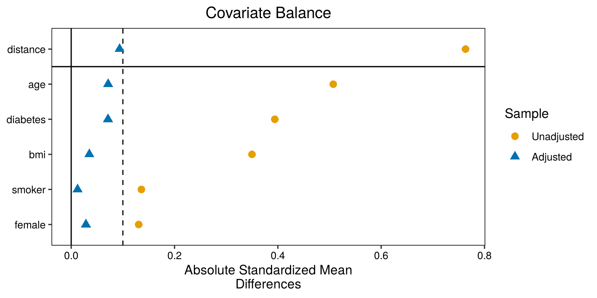
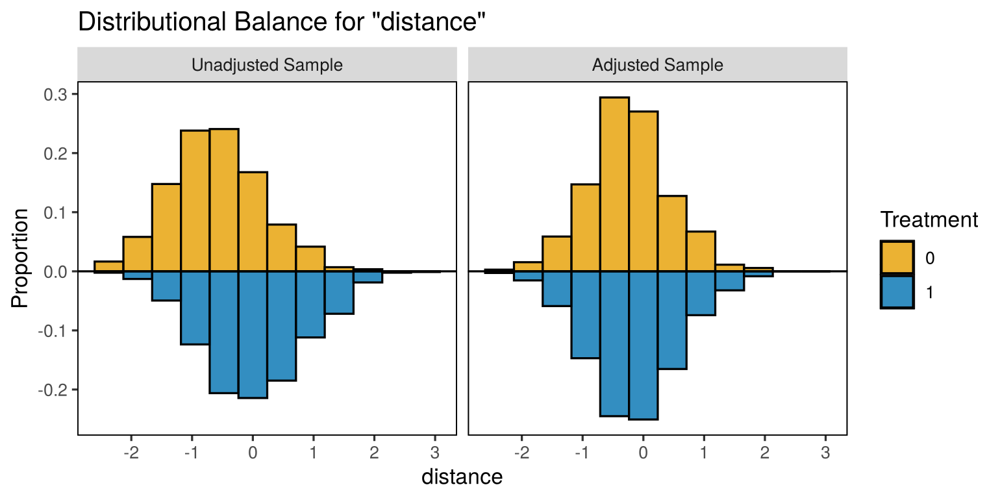
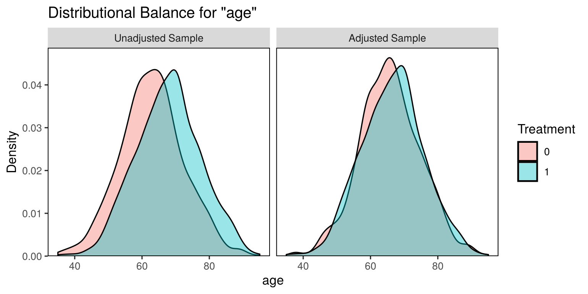

quiz([
{
"q": "What does a caliper do in propensity score matching?",
"options": [
"It sets the maximum distance allowed between the scores of two matched patients",
"It decides which covariates go into the propensity score model",
"It sets the number of controls for each treated patient",
"It removes patients with missing data"
],
"answer": 0,
"why": "A treated patient with no control within the caliper is left unmatched, rather than being given a poor match.",
"hints": [
"",
"That's a modelling choice, made before matching.",
"That's the matching ratio.",
"Missing data are a separate issue."
]
},
{
"q": "Why are propensity scores compared on the logit (log-odds) scale when matching?",
"options": [
"On the probability scale, scores near 0 and 1 are squashed together, so equal distances don't mean equally good matches",
"Because logit scores are always positive",
"Because the logit scale makes every patient match",
"Because MatchIt can't use probabilities"
],
"answer": 0,
"why": "The logit scale spreads the scores out evenly, so a distance means the same thing everywhere.",
"hints": [
"",
"Logit scores can be negative: probabilities below 0.5 give negative logits.",
"Matching on any scale can leave patients unmatched.",
"MatchIt can use either scale. That's why the scale has to be set deliberately."
]
}
])6 Matching in R
Warm-up: remember Chapter 5?
Two quick questions to bring back the key ideas from last time.
6.1 From hand matching to matchit()
You’ll need the simulated cohort from Chapter 5. Load it in the same way:
source("simulate_cohort.R")
cohort <- simulate_cohort(n = 2000, seed = 2026)6.2 The workflow, and the tools
Putting it all together, a propensity score analysis has six steps:
- Specify the confounders and the estimand.
- Estimate the propensity score, usually by logistic regression.
- Match treated to untreated patients with similar scores.
- Check balance in the matched sample. If it’s poor, go back to step 2 or 3, e.g. add interactions or squared terms, or change the caliper. Don’t look at outcomes until the design is settled.
- Estimate the treatment effect in the matched sample (Chapter 7).
- Think about sensitivity to unmeasured confounding.
In Chapter 5 we did steps 2 and 3 by hand, to see how they work. In practice, you use two R packages:
- MatchIt (Ho et al. 2011) does steps 2 and 3 in one function,
matchit(). It fits the propensity score model, then matches using the method, ratio and caliper you choose. It returns the matched data, ready for analysis. - cobalt does step 4. It produces balance tables (
bal.tab()) and plots, including the Love plot (love.plot()), which shows the SMD of each covariate before and after matching.
6.3 Propensity score matching in R with MatchIt
6.3.1 Steps 2–3: estimate the PS and match
matchit() does what we did by hand in Chapter 5 (Section 5.5 and Section 5.6). It fits the same logistic regression, then performs 1:1 nearest-neighbour matching without replacement, with a caliper of 0.2 SDs of the logit propensity score:
m_out <- matchit(
treated ~ age + female + diabetes + bmi + smoker, # the PS model
data = cohort,
method = "nearest", # greedy nearest-neighbour matching
distance = "glm", # propensity score from logistic regression ...
link = "linear.logit", # ... with distances on the logit scale
caliper = 0.2, # max distance: 0.2 SDs of the logit PS
ratio = 1 # 1 control per treated patient
)
m_out#> A matchit object
#> - method: 1:1 nearest neighbor matching without replacement
#> - distance: Propensity score [caliper]
#> - estimated with logistic regression and linearized
#> - caliper: <distance> (0.169)
#> - number of obs.: 2000 (original), 1428 (matched)
#> - target estimand: ATT
#> - covariates: age, female, diabetes, bmi, smoker6.3.2 Step 4: check balance with summary() and cobalt
summary(m_out, un = FALSE) # un = FALSE hides the pre-matching table#>
#> Call:
#> matchit(formula = treated ~ age + female + diabetes + bmi + smoker,
#> data = cohort, method = "nearest", distance = "glm", link = "linear.logit",
#> caliper = 0.2, ratio = 1)
#>
#> Summary of Balance for Matched Data:
#> Means Treated Means Control Std. Mean Diff. Var. Ratio eCDF Mean
#> distance -0.1728 -0.2500 0.0936 1.1902 0.0239
#> age 66.4818 65.7983 0.0715 1.0372 0.0142
#> female 0.4300 0.4160 0.0285 . 0.0140
#> diabetes 0.2549 0.2213 0.0712 . 0.0336
#> bmi 28.6483 28.4917 0.0351 0.9791 0.0092
#> smoker 0.2619 0.2675 -0.0124 . 0.0056
#> eCDF Max Std. Pair Dist.
#> distance 0.0854 0.0941
#> age 0.0700 0.8591
#> female 0.0140 1.0432
#> diabetes 0.0336 0.5284
#> bmi 0.0336 1.0055
#> smoker 0.0056 0.8480
#>
#> Sample Sizes:
#> Control Treated
#> All 1151 849
#> Matched 714 714
#> Unmatched 437 135
#> Discarded 0 0Every SMD is below 0.1, so the matching has balanced the measured covariates.
A Love plot shows balance before and after matching at a glance. (It’s named after the statistician Thomas Love, who popularised it, not after the emotion.)
love.plot(m_out, stats = "mean.diffs", abs = TRUE, binary = "std",
thresholds = c(m = 0.1), var.order = "unadjusted",
colors = c("#E69F00", "#0072B2"), shapes = c("circle", "triangle"))
Check the overlap of propensity scores, before and after:
bal.plot(m_out, var.name = "distance", which = "both",
type = "histogram", mirror = TRUE,
colors = c("#E69F00", "#0072B2"))
For continuous variables, check the whole distribution, not just the mean:
bal.plot(m_out, var.name = "age", which = "both")
6.3.3 Getting the matched data
match.data() returns the matched sample. It has three extra columns: distance (the PS), weights (all 1 for 1:1 matching) and subclass (which pair each patient belongs to). We’ll need subclass for the standard errors in Chapter 7.
matched <- match.data(m_out)
dim(matched)#> [1] 1428 12head(matched[, c("id", "treated", "age", "diabetes", "distance", "weights", "subclass")])#> id treated age diabetes distance weights subclass
#> 1 1 0 70 0 -0.08309869 1 374
#> 3 3 0 66 0 -0.04388743 1 576
#> 5 5 0 58 1 0.19551254 1 54
#> 7 7 0 58 0 -0.20062921 1 7
#> 8 8 1 55 1 0.17718583 1 631
#> 9 9 1 66 0 -0.23877486 1 6756.3.4 Practice: fill in the blanks
This is a live exercise: edit the code, click Run Code, and your answer is checked automatically. See Section 1.4.1 if you haven’t used one before.
The simulated cohort is already loaded. Replace each ______, then click Run Code. (The first run downloads MatchIt and cobalt, so it takes a little longer.)
NoteHint 1
The logit-scale option is "linear.logit". The caliper and the SMD threshold are numbers from this chapter: 0.2 and 0.1.
NoteHint 2
The function that extracts the matched data is match.data().
TipSolution
m <- matchit(treated ~ age + female + diabetes + bmi + smoker,
data = cohort, method = "nearest",
link = "linear.logit", caliper = 0.2)
summary(m, un = FALSE)$nn
bal.tab(m, binary = "std", thresholds = c(m = 0.1))
matched <- match.data(m)
nrow(matched)714 treated patients were matched to 714 controls, so the matched data have 1428 rows. 135 treated patients had no control within the caliper. Every covariate is “Balanced, <0.1” after matching.
Quick quiz
Choose an answer to each question. You’ll get instant feedback and can change your answer as often as you like.
6.4 Exercise
6.4.1 Exercise 6.1
The simulated cohort is already loaded in each box. Each part changes one matching choice and asks what happens. The parts are checked separately.
Part 1: no caliper
This is the matching from this chapter. Remove the caliper, then run it. How many treated patients are matched now, and how does balance compare?
NoteHint 1
Delete , caliper = 0.2 from the matchit() call (keep the closing bracket).
TipSolution
m_nocal <- matchit(treated ~ age + female + diabetes + bmi + smoker,
data = cohort, method = "nearest",
link = "linear.logit")
summary(m_nocal, un = FALSE)$nn
bal.tab(m_nocal, binary = "std", thresholds = c(m = 0.1))Without a caliper, all 849 treated patients are matched (there are more controls than treated patients, so everyone finds someone). But the matches for the high-scoring treated patients are poor, and balance is much worse: age (SMD 0.25), diabetes (0.29) and BMI (0.15) are all still above 0.1. Keeping everyone isn’t worth it if the groups aren’t comparable.
Part 2: two controls per treated patient
Keep the caliper, but allow up to 2 controls for each treated patient (see the optional box on other matching options). What happens to the sample size and the balance?
NoteHint 1
ratio = 2 allows up to two controls per treated patient.
TipSolution
m_r2 <- matchit(treated ~ age + female + diabetes + bmi + smoker,
data = cohort, method = "nearest",
link = "linear.logit", caliper = 0.2,
ratio = 2)
summary(m_r2, un = FALSE)$nn
bal.tab(m_r2, binary = "std", thresholds = c(m = 0.1))The same 714 treated patients are matched, now to 987 controls instead of 714, so the analysis would be more precise. R warns that not every treated patient found 2 controls within the caliper. Every covariate is still balanced (|SMD| below 0.1), though balance is slightly worse than with 1:1 matching: the SMD for age rises to 0.08, and the propensity score itself (distance) is just over the threshold, at 0.12. With a variable number of controls per patient, the matching weights are no longer all 1, so they must be used in the analysis (Chapter 7).
Part 3: leave a confounder out
Remove smoker from the propensity score model. Then check whether smoking is balanced after matching. Because smoker is no longer in the model, bal.tab() needs addl = ~ smoker to include it. Make the balance table the last line.
NoteHint 1
Delete + smoker from the formula in matchit().
NoteHint 2
Then addl = ~ smoker adds smoking to the balance table.
TipSolution
m_nosmk <- matchit(treated ~ age + female + diabetes + bmi,
data = cohort, method = "nearest",
link = "linear.logit", caliper = 0.2)
bal.tab(m_nosmk, addl = ~ smoker, binary = "std", un = TRUE)The four variables in the model are balanced, but smoking isn’t: its SMD is 0.16 after matching, slightly worse than the 0.14 before. Nothing in the matching made smoking balance. Because smoking affects survival, the treatment effect estimate would be confounded. This is the measured version of the unmeasured-confounding problem from Section 5.7.
6.5 Summary
Answering the question. matchit() matched 714 treated patients to 714 controls. 135 treated patients had no control within the caliper. After matching, every covariate had |SMD| < 0.1, so the matched groups are comparable on all five measured confounders. Chapter 7 compares their survival.
6.6 Further reading
All of these are free to read online unless marked otherwise. The whole book’s reading list, grouped by topic, is in Appendix C.
- Greifer (n.d.): Start here. A step-by-step guide to the R workflow used in this chapter, from the MatchIt package’s author. The companion vignettes on estimating effects after matching, and the cobalt package’s guide to balance, are also worth reading.
- Stuart (2010): More advanced. A thorough review of matching methods and the choices involved.